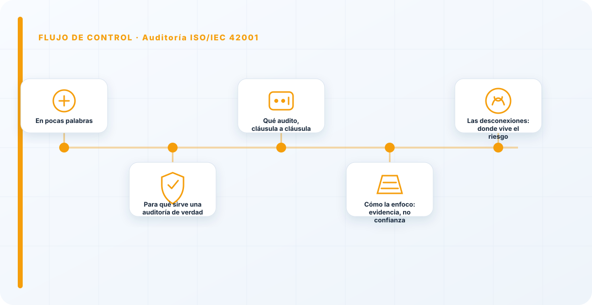
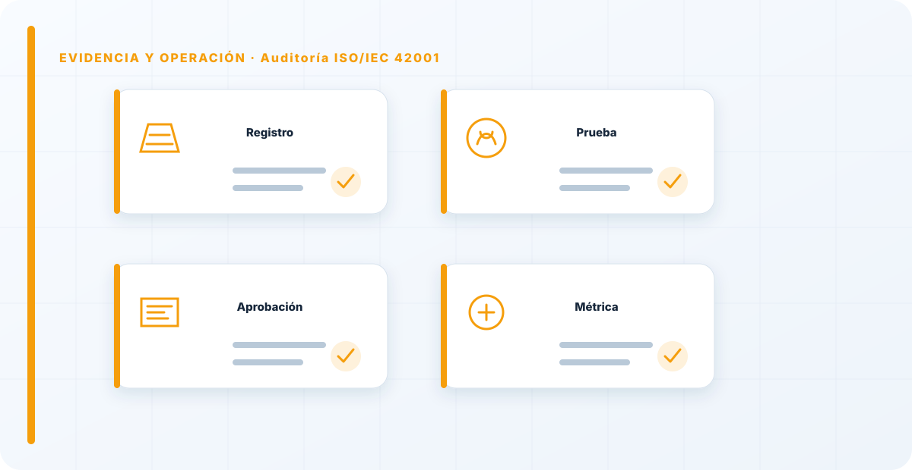

En pocas palabras
Auditar un SGIA contra ISO/IEC 42001 es comprobar, con evidencia, que el sistema de gestión que dice tener la organización existe de verdad y funciona. No es leer políticas ni admirar carpetas bien ordenadas: es tirar del hilo de cada requisito de la norma hasta encontrar la prueba —o la ausencia de prueba— de que se cumple. Como auditor, mi trabajo no es que aprueben; es que lo que esté bien lo puedan demostrar, y que lo que no, salga a la luz antes de que lo haga un incidente. Un buen auditor no es un enemigo: es la última oportunidad de arreglar algo con calma, en un despacho, en lugar de a las tres de la mañana durante una crisis.
Para qué sirve una auditoría de verdad
Antes de entrar en el cómo, conviene fijar el para qué, porque de ahí depende toda la actitud. Una auditoría no existe para poner una nota ni para repartir culpas; existe para darle a la organización una foto honesta de dónde está de verdad frente a la norma y frente a sus propios riesgos. Esa foto vale precisamente por lo que tiene de incómoda: te enseña los huecos que desde dentro no se ven, porque desde dentro todo el mundo asume que "eso ya lo hace alguien".
Por eso una auditoría que no encuentra nada casi nunca es una buena noticia: suele significar que no se miró donde molesta. La utilidad de una auditoría se mide por los problemas relevantes que saca a la luz a tiempo, no por lo tranquilo que deja el informe. Cuando alguien me pide que sea suave, le explico que la suavidad no le hace ningún favor: el hallazgo que hoy le incomoda es el incidente que mañana se ahorra.
Qué audito, cláusula a cláusula
La norma me da la estructura y la recorro entera, sin saltarme partes por cómodas o por incómodas. No es un recorrido burocrático: cada cláusula responde a una pregunta concreta sobre si el sistema vive o solo está dibujado.
El contexto y el liderazgo responden a "¿hay un alcance claro, una política real y un compromiso de dirección, o solo un documento firmado y olvidado?". La planificación responde a "¿se gestionan los riesgos y los impactos con método, o se improvisa caso a caso?". El soporte y la operación responden a "¿los controles se aplican sobre los sistemas de verdad, o solo sobre el papel que los describe?". Y la evaluación y la mejora responden a "¿se mide, se audita internamente y la dirección decide de verdad sobre lo que sale?".
Además de las cláusulas, reviso el Anexo A: qué controles ha declarado aplicables la organización y si la evidencia los respalda uno a uno. Aquí aparece un patrón que veo mucho: se declaran aplicables un montón de controles "para quedar bien" y luego la mitad no tienen ninguna evidencia detrás. Un SGIA puede tener todas las cláusulas documentadas y suspender en la operación, que es justo donde se ve si el sistema respira o es decorado.

Cómo la enfoco: evidencia, no confianza
Audito por evidencia, no por confianza. Cada afirmación —"tenemos control de accesos a los modelos", "revisamos los riesgos cada trimestre"— la persigo hasta el registro que la demuestra. Si no hay registro, no hay control, por mucho seguridad y convicción con que me lo cuenten en la reunión. No es desconfianza personal; es que una auditoría que se cree lo que le dicen no es una auditoría, es una conversación agradable.
La evidencia, además, tiene grados. Una política firmada demuestra que existe una política, no que se cumpla. Una entrevista me da contexto, pero la contrasto. Ver el proceso funcionando en vivo vale mucho más, y un registro o un log que prueba que el control se ejecutó de verdad es lo más sólido de todo. Cuanto más importante es lo que estoy afirmando, más y mejor evidencia exijo, y de más de un tipo.
Las desconexiones: donde vive el riesgo
Si tuviera que resumir dónde aporta valor una auditoría, diría que en encontrar las desconexiones: los puntos donde la política dice una cosa y la operación hace otra. Ese hueco entre lo escrito y lo real es donde viven los riesgos que nadie está mirando, precisamente porque todo el mundo asume que el papel refleja la realidad. Y casi nunca la refleja del todo.
Ejemplos que me encuentro una y otra vez: la política dice que todo modelo tiene propietario, pero hay tres modelos en producción sin dueño asignado; el procedimiento exige evaluación de impacto antes de desplegar, pero el último despliegue no la tiene; el registro de riesgos existe, pero no se ha tocado en un año. Ninguna de esas cosas se ve leyendo los documentos; todas se ven cruzando el documento con la realidad. Mi trabajo es hacer ese cruce sistemáticamente, y sacar a la luz cada sitio donde el papel y la operación se han separado.
Interna, externa y certificación
Conviene distinguir tres cosas que la gente mezcla. La auditoría interna es la que la propia organización se hace a sí misma, y es un requisito de la norma: es el mecanismo con el que el sistema se vigila y se corrige por dentro. La auditoría externa la hace un tercero independiente, y aporta una mirada sin los sesgos de quien vive dentro. Y la certificación es una auditoría externa por una entidad acreditada que, si todo está en orden, emite el sello.
El error más común es tratar la interna como un trámite —hacerla deprisa, con quien no tiene independencia, para poder decir que se hizo— cuando es justo la que más valor tiene para la organización, porque es la que puede corregir antes de que llegue nadie de fuera. Una auditoría interna hecha en serio hace que la externa y la certificación sean casi un formalismo; una hecha por cumplir deja los problemas para que los descubra un tercero, que es la peor forma de enterarse.

La auditoría como mejora, no como examen
Todo lo anterior descansa en un cambio de mentalidad que insisto mucho en transmitir: la auditoría no es un examen que se aprueba o se suspende, es un chequeo que te dice dónde estás para que puedas mejorar. Una organización que se prepara para "aprobar" maquilla —ordena las carpetas, prepara respuestas, esconde lo que cojea—; una que se prepara para "saber la verdad" arregla. La diferencia se nota clarísimamente a los seis meses: la primera vuelve a tener los mismos huecos, la segunda los ha cerrado.
Por eso valoro tanto a las organizaciones que me piden que sea duro, y desconfío de las que solo quieren el sello rápido. Un auditor complaciente no le hace un favor a nadie; le vende una tranquilidad falsa que se rompe en el primer incidente. La auditoría más útil que puedo entregar es la que encuentra el problema mientras todavía es barato de arreglar.
Independencia y relación con el auditado
Una auditoría vale lo que vale su independencia. Si quien audita depende de quien es auditado, o tiene interés en que el resultado sea bueno, la auditoría está viciada desde el principio, por muy bien hecha que esté técnicamente. Por eso la independencia del auditor no es una formalidad: es la condición que hace que sus conclusiones signifiquen algo. En la auditoría interna esto es especialmente delicado, porque es fácil caer en que se audite a sí mismo quien tiene algo que perder si aparecen problemas; la norma pide, con razón, que quien audita no audite su propio trabajo.
Pero la independencia no significa hostilidad. La mejor relación con el auditado no es la del policía y el sospechoso, es la de dos partes que quieren lo mismo: que la organización esté de verdad donde cree estar. Cuando el auditado entiende que no voy a por él sino a por los huecos, colabora, me da acceso real y me cuenta lo que cojea en lugar de esconderlo. Y esa colaboración es la que hace que la auditoría encuentre lo que importa. Una auditoría en la que el auditado se defiende y oculta es una auditoría a medias, porque solo ve lo que le dejan ver.
Por eso dedico tiempo, al principio, a explicar para qué sirve todo esto: que el objetivo es su mejora, no su evaluación personal. Un auditado que confía en el proceso es la mejor fuente de evidencia que existe; uno que lo teme, el mayor obstáculo. La independencia me la da mi posición; la colaboración me la gano yo con la actitud.
El error que más veo en organizaciones que se preparan para auditoría es confundir "tener el documento" con "cumplir el requisito". La norma no pide documentos, pide evidencia de que el sistema funciona. He suspendido SGIAs con carpetas impecables porque nada de aquello se aplicaba de verdad, y he aprobado otros con menos papel pero con un sistema que decidía y corregía de verdad. La auditoría mira la realidad, no el archivador; y la realidad casi siempre está en el hueco entre lo que se escribió y lo que se hace.
Los errores que veo una y otra vez
- Confundir documentar con cumplir el requisito.
- Preparar la auditoría maquillando en vez de cerrar los huecos reales.
- Declarar controles del Anexo A sin evidencia que los respalde.
- Auditar solo el papel y no cruzarlo con la operación.
- Tratar la auditoría interna como un trámite en vez de como la herramienta de mejora que es.
- Ver la auditoría como un examen a aprobar y no como un diagnóstico.
- Creer que "no encontrar nada" es una buena auditoría.
Referencias y marcos relacionados
Contenido educativo y técnico. No sustituye asesoramiento jurídico ni una auditoría formal.